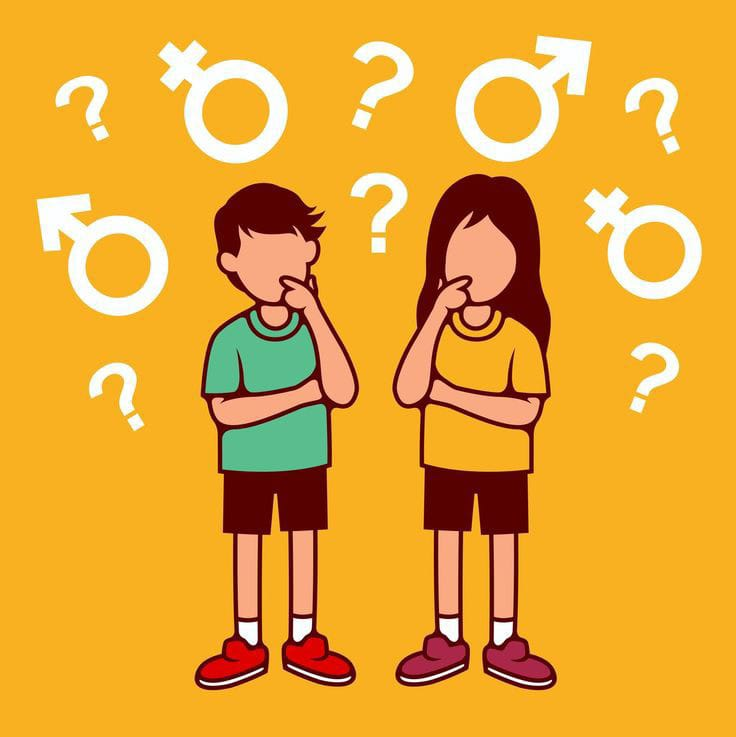

Enfermedades De Transmicion Sexual (ETS)
¿Qué son las enfermedades de transmicion sexual?
Las Enfermedades de Transmisión Sexual (ETS), también conocidas como Infecciones de Transmisión Sexual (ITS),son infecciones que se transmiten principalmente a través del contacto sexual
Estas pueden ser causadas por bacterias, virus o parásitos. Es importante destacar que muchas personas con ETS no presentan síntomas, lo que dificulta su detección y tratamiento oportuno.